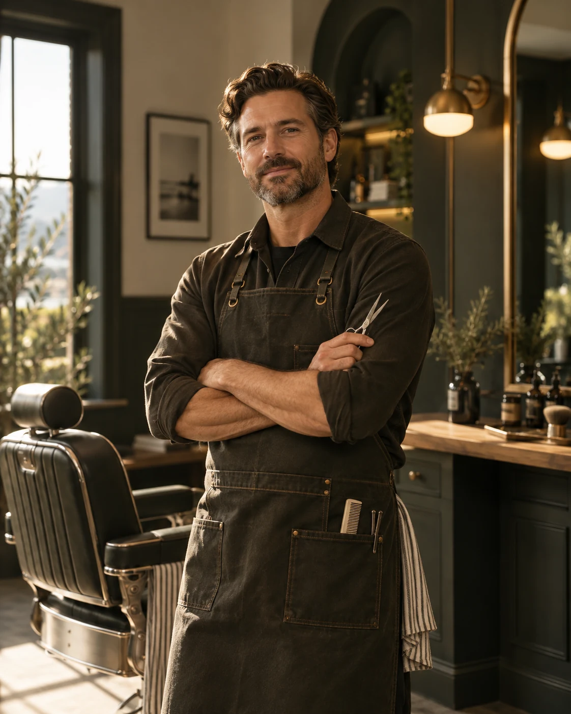

01 — Behind the chair
Ash Mercer
Founder · Classic cuts & scissor work
Ash started Northline so he could spend enough time on each cut. He’s happiest working with scissors, longer hair and classic styles you can wear every day.
Specialties
- Classic cuts
- Scissor work
- Longer styles
- Natural texture
- Restyles
Approach:
Take your time and get it right.